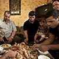
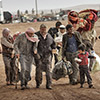
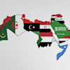

Diplomats B1/1+
Back
كتاب مستوى
B1/1+
العربــية الدبلوماسية
Arabic for Diplomats
الوحدة الثانية: الرياضة
الوحدة الرابعة: الفنّ السّابع
الوحدة الخامس: الحكومات والنظم السياسية
الوحدة السابعة: الطّفل والأسرة
الوحدة الثامنة: المجتمع العربي
الوحدة التاسعة: اللاجئون
الوحدة العاشرة: دول عربية
(أثّر - يؤثّر | التأثير (في ، على
To influence
(أثَّرَ– يُؤَثِّر/التأثير(في/على) – تأثر – يتأثر / التأثر (بـ
To Influence
(أجبر – يجبر / الإجبار (على
To Force
(أدّى – يؤدّي (إلى
To lead to
(أسرف – يسرف / الإسراف(في
To waste money
(أُصيب (بــ
To be injured
(أعرب - يعرب | الإعراب (عن
To express clearly
(أقدم – يقدم / الإقدام (على
Undertake
(أكَّد – يؤكّد / التأكيد (على
To Confirm
(إطلاق النار (على
To shoot
(اتَّسع – يتسِع / الاتساع (لـ
Accommodate
(احتجّ – يحتجّ/ الاحتجاج (على
To protest
(ارْتاب – يَرْتاب/الارتياب (من
To be suspicious
(ارتبط - يرتبط | الارتباط (بـ
To be related to
(استاء – يستاء /استياء (من
To be offended
(اسْتَاء – يَسْتَاء/ الاسْتياء (مِن
To be offended
(استند – يستند / الاستناد (على/ إلى
To Base on
(استولى – يستولي/ الاستيلاء (على
Over power
(اعتمد– يَعْتَمد/ الإعتِماد (على
To Depend on
(افتقد – يفتقد / الافتقاد (إلى
To be completely without something
(التزم – يلتزم / الالتزام (بـ
To hang on to
(انتسب – ينتسب / الانتساب (إلى
To belong to
(انتظم - ينتظم | الانتظام (في
To be regular
(اندمج – يندمج / اندماج ( في
To incorporate
(تبرَّع – يتبرع/ التبرُّع (بـ
Donate
(تخلّى – يتخلى / التخلّي (عن
To betray
(تدخّل – يتدخّل/ التدخُّل (في
To interfere in
(تمثّل – يتمثل / التمثل (في
To appear in
(حذّر – يحذّر/ التحذير (من
To warn
(عانى – يعاني/ المعاناة (من
To suffer
آذى – يؤذي / الإيذاء
To Harm/ Hurt
آمِن
Safe
آمِن (ج) آمنون
Safe
أبدى – يُبدي
To Show
أبلغ – يبلغ/ الإبلاغ
Deliver / announce
أبوية
Patriarchy
أتاح - يتيح | الإتاحة
To make available
أجرى - يُجري | الإجراء
To hold (an event)
أجرى – يجري / إجراء
To accomplish
أجّل - يأجّل | التأجيل
To postpone
أحيى – يحيي/ الإحياء
Revival
أخذ على عاتقه
To Undertake
أدخل – يدخل / إدخال
To enter / embodiment
أدّى – يؤدي / تأدية
To perform
أراد- يريد / الإرادة
Will
أرملة (ج) أرامل
Widow
أزمة (ج) أزمات
Crises
أساسيّ (ج) أساسيّات
Primary
أسرة النواة
Small family
أشار – يشير / الإشارة (إلى) ←مشير
To point
أشوف = أرى
To see
أصاب – يصيب / إصابة
To Hit/ Injure
أَصابَ- يُصِيب/الإصابة
Hit / Infect someone
أضاع
To miss
أطلق النار
Shot fire
أعاد – يعيد / إعادة
redoing
أعطى – يعطي / إعطاء
To give
أغلق – يُغْلق/ الإغلاق
To close
أقصى
Utmost
أقلية (ج) أقليات
Minority
أكرم – يكرم / إكرام←كريم (ج) كُرماء
To be generous
أمْر(ج) أوامر
Orders
أنتج – ينتج / إنتاج
To Produce
أنجب – يُنجِب / الإنجاب
To Beget
أنقذ – ينقذ/ الإنقاذ
To save
أهان – يهين / الإهانة
To Insult
أهّل – يؤهل / تأهيل ←مُؤهَّل
To entitle
أهل الحل والعقد
Decision makers
أيّد - يؤيّد | التأييد
To support
إجراء (ج) إجراءات
Procedure
إزاء
With regard to
إسكات
Crushing
إعلان (ج) إعلانات
Announcement
إيجابيات
Advantages
إيجاز
Briefly
اتهم- يتهم / اتهام (بـ )/ تُهمة ←مُتَّهم
To Accuse
احتضن – يحتضن / الاحتضان
To Raise a child
اختار – يختار / اختيار ←مختار
To choose
اختفى – يختفي / اختفاء
To disappear / hide
اِرْتاب- يَرْتاب /ارتياب←مُرْتاب
To be Skeptical
ارتكب – يرتكب / الارتكاب
To Commit
استبعد – يستبعد/ الاستبعاد
Exclude
استجاب – يستجيب/ الاستجابة
To response
استحق – يستحق / استحقاق
To Deserve
استدعى – يستدعى/ الاستدعاء
To demand
استرخاء
To relax
استضاف – يستضيف / استضافة مستضيف
To host
استطلاع
Questionnaire
استغرق - يستغرق | الاستغراق
To take
استغلت
Made use of
استقر – يستقر/ استقرار ← مستقر
To be settled
استقلّ – يستقل / استقلال ←مستقل
To be independent
استهدف – يستهدف/ الاستهداف
To target
اصطفوا
To Align
اضطهد – يضطهد / اضطهاد مضطَّهَد
Persecuted
اعتبر – يعتبر / اعتبار
To consider
اعتزم – يعتزم
To resolve
اقترح – يقترح / اقتراح ←مُقتَرَح
To suggest
اكتأب – يكتئب / الاكتئاب
Depression
اكتساب
Acquisition / Gain
الأبد
Ever
الأجواء
Ambience
الأفق
Horizon
الأمانة
Trust
الأمر الواقع
Reality
الأمراض المزمنة
Chronic
الإقامة : أقام – يقيم مقيم
Residence
الاتجار
Business
الاحتكاك
Attrition
الاحتماء : احتمى – يحتمي (بـ ) حمى – يحمي / حماية
Seeking protection
الاستجابة
Response
الاستعمار
Colonialism
الاستغلال
Benefit / gain
الاستهلاك
Consuming
الافتتاح
Opening
البادية (ج) البوادي
Desert
التجارة البينية
Mutual trading
التحالُف
Alliance
الترغيب
Exhorting
الترهيب
Frightening / terrifying
التصديق على
Approval on sth
التضامن
Solidarity
التعايش
Coexist
التمييز العنصري
Discrimination
التهريب
Smuggling
التوافد
To flock together
الثقة
Trust
الجاني (ج) الجناة
Criminal
الجسيم (ج) الجِسام
Serious
الجلاد
Hangman
الجنس (ج) الأجناس
Gender
الجوع
Hungry
الحدّ من
Decrease
الحسنة (ج) الحسنات
Excellence
الحصار
Siege
الخير≠الشر
Good ≠ Bad
الدائم (ج) الدائمون
Permanent
الدفء
Warmth
السكري
Diabetes
السُّمنة = البدانة
Fatness
الشائكة
Complicated
الشتات
Diaspora
الشرف
Honor
الشيوعية
Communism
الصدارة
First place
الصدق
Faithfulness
الصعود # الهبوط
Going up
الصواب≠الخطأ
Right ≠ wrong
الضيف (ج) الضيوف
Guest
الطائفية
Sectarianism
الطفولة
Childhood
العبودية
Slavery
العثور
Finding
العصر الحديث
Recent epoch / era
العضو (ج) الأعضاء
Members
العُقد النفسية
Mental disorder
العمالة
Labor
العملات
Currencies
الفئة العمرية (ج) الفئات العمرية
Age group
الفقر المدقع
Extreme poor
القاحلة
Hardscrabble / arid
القاسم المشترك
Common divisor
القِبلة
Destination
القرض (ج) القروض
Loan
اللجوء : لجأ – يلجأ لاجئ (ج) لاجئون
Resorting to
المادة القانونية(ج) المواد القانونية
Article "in law"
المتسولين
Beggars
المتطوعين
Volunteer
المتنازَع عليها
Under dispute
المجني عليه (ج) المجني عليهم
Victim
المحاصيل
Corps
المحرومون
Deprived
المدنيّ (ج) المدنيون
Civilian
المركز
Centre
المُسلَّح (ج) المُسلَّحون
Armed
المشهد
Scene
المعاقين
Disabled
المعونات
Aids
المناوشات
Negotiations
الناطقة
Talkie
النزاع
Struggle
النكبة
Catastrophe
النكبة
Catastrophe
الهاجس
Delusion
امتياز (ج) امتيازات
Sensationally
انتحاري
Suicidal
انتمى –ينتمي / انتماء
To belong to
انتهك – ينتهك / الانتهاك
To Invade
انخراط
Involving
انخفض – ينخفض/ الانخفاض
Grow less / be decrease
اندحار
Defeat
اندماج
Cohesion
انطبع – ينطبع / انطباع
To be impressed
انطلاقة (ج) انطلاقات
Take off / Base
انعدم – ينعدم/ الانعدام
Absence
انفتاح
Opening
انفجر – ينفجر / انفجار
Explode
اهتمام/ات
Interest
بأسرها
Entirely
بؤس
Adversity
بات – يبيت / البيات
Sleep
بارعين
Skilled
باستثناء
Except for
بالذات
Especially
بالغ
Extreme
بالغ الأهمية
Very important
بجدية
Seriously
بحث – يبحث / البحث ( عن / في )
To search for
بديهي (ج) بَدهيَّات
Axiomatic / Taken for granted
بشع ←أبشع
Unpleasant / shameful
بشكل محدود
Limited
بصرها
Vision
بصمة (ج) بصمات
Impression /Finger print
بطولة (ج) بطولات
Championship
بُعد
Dimension
بُعد (ج) أبعاد
Extent / dimensions
بُعد (ج) أبعاد
Extent
بغض النظر
Regardless of
بغض النظر
Regardless of
بلَغ – يبلُغ / البلوغ
To Reach
بنية
Structure
بيت الشعر (ج) بيوت الشعر
Tent
تأهّل - يتأهّل | التأهّل (إلى ، لـ )
To qualify for (next round in sports, etc…)
تابع
Follower / Following
تبادل – يتبادل / التبادل
To exchange
تبرع
Donate / granting
تبنَّى – يتبنّى / التبنّي← المتبنّى
To Adopt
تبنّى – يتبنّى/ التبنّي
To adopt
تبوء بالفشل
Accession failure
تتقلص
To become less
تثمر
To bear a fruit, to benefit
تجاوزَ – يتجاوز / التجاوُز
To Exceed
تجنيد
Enlistment
تحدها
Adjoined it
تحدي
To challenge
تحرر – يتحرر / التحرر
To liberate
تحل محل
To take the place of
تحوّل- يتحول/ التحول
To Turn into
تُخلّف
تداعيات = عواقب = تبعات
Consequences
تُدِر دخلاً
Source of income / brings income
تدفّق – يتدفق/ التدفق
Overflow
تذكّر – يتذكر / التذكر ←ذاكرة(ج) ذاكرات ←ذكرى (ج) ذكريات
To remember
ترحيل
Exile
تردّي
Backsliding
ترك – يترك / الترك ←متروك
To leave
تستقطب
To polarize
تسخين
Warm up
تسديدة صاروخية
A phrase used to describe the power of a shot as a rocket
تسعى
Trying
تسويتها
Accommodation
تشدد – يتشدد / التشدد ←متشدد
Be inflexible / strict
تشوَّه – يتشوَّه / التشوُّه
To Deform
تشويه
Deformity
تطلعات
Hopes / Aspirations
تعامل – يتعامل / التعامل
To deal with
تعاهد
To agree
تعاون – يتعاون / التعاون
To cooperate
تعرَّض – يتعرّض / التعرُّض (لـ )
To Expose
تعقَّد – يتعقَّد / التَّعقُّد
To be Complex
تعقيد
To complicate
تغريدة
Tweet
تغليف
Packaging
تفاصيل
Details
تَفاوَت- يتفاوت/ التفاوت←متفاوتة
To Vary / Contradict
تقطعت به السبل
He has no way
تمركز – يتمركز / التمركز
Centralize
تميّز – يتميز/ التميز
Mince
تنافس – يتنافس / التنافس
To compete
تناولها
Obtain
تواجد – يتواجد / التواجد ( في ) ←متواجد
Exist
تواصَل – يتواصل / التواصُل ←متواصِل
To Trickle / Occur in a continuous way
توجيهات
Guides
ثروة
Wealth
جائزة (ج) جوائز
Award / Prize
جائزة (ج) جوائز
Prize
جدل
Argument
جذْر (ج) جذور
Root
جريح (ج) جرحى
Injured
جعل - يجعل
To make
جعل- يجعل
To Make
جفاف
Dehydration
جناية (ج) جنايات = جريمة (ج) جرائم
Crime
جِنس (ج) أجناس
Race / gender
جنسية (ج) جنسيات
Nationality
جو ( ج) أجواء
Ambience
جِيل (ج) أجيال
Generation
حاز
Accomplished / Achieved
حاسة اللمس
Tactile sense
حافظ - يحافظ | الـمحافظة ، الحفاظ (على)
To maintain
حافظ – يحافظ / المحافظة (على )
Keep doing
حالة (ج) حالات
Case
حالة عداء
Antagonism
حاليًّا
Currently
حامل (ج) حوامل
Pregnant
حاول – يحاول / المحاولة
To try / to attempt
حدّ (ج) حدود
Limit
حد أدنى
Minimum
حدث
Event
حَذِر – يحذَر / الحَذَر
To Warn
حرب (ج) حروب
War
حرق – يحرق / الحرق
To burn
حرية مطلقة
Absolute freedom
حسب تعبيره
According to his expression
حسم - يحسم | الحسم
To put an end to
حصّة (ج) حصص
Share
حصد - يحصد | الحصد
To reap
حصدت
Won
حضارات
Civilizations
حضّر – يحضّر / تحضير
To prepare
حظْر
Prohibit
حُفاة
Barefoot
حق (ج) حقوق
Right
حَقَّقَ- يُحَقِّقُ/التَّحْقيق
To Investigate
حقن الدماء
Sparing the blood of
حكم ذاتي
Self-rule
حلّت
To take a place "in rank"
حلماً يراود
A dream that I always have
حمى – يحمي / حماية
To protect
حوار
Conversation
حيّز التنفيذ
Into force
حيوي/ـة
Essential
خبير (ج) خُبراء
Expert
خِدمة (ج) ات
Service
خدمة (ج) خدمات
Service
خسر - يخسر | الخسارة
To lose
خصومة ثأرية
Revenge based on antagonism
خضع – يخضع / الخضوع (لـ )
To obey
خِطاب
Speech
خطر (ج) أخطار
Danger
خطوة (ج) خطوات
Step
خطير
Dangerous
خفّف - يخفّف | التخفيف (من)
To reduce
خفَّف – يخفف / التخفيف←مُخفَّف
To decrease
خلطات
Mixtures
خيالي
Unreal
دار (ج) ديار
Home
دافع (ج) دوافع
Cause
درّب – يدرب / تدريب ← مدرّب
To coach/train
دفع – يدفع / الدفع
To force to
دواء (ج) أدوية
Medicine
دوري أبطال
League / Tournament
دول الجوار
Neighboring countries
ذات
Which / that has
رأس الحربة
Bayonet
رابطة (ج) روابط
League / Union / Confederation
راقصة/ات
Dancer
ربّى – يُربّي / تربية
To Raise
رَشُد – يرشُد / الرُشد
To Consent / legal
رَضع – يرضع / الرضاعة
To Breastfeed
رمز (ج) رموز
Symbol / Picture
رمزية
Token gift / Symbolic gift
روادها
Pioneers
زعامة
Leadership
زُمَر
Type
ساحة (ج) ات
Field / yard
ساعد – يساعد / مساعدة (ج) مساعدات
To help / "aid"
ساند – يساند/ المساندة
To help
ساوى – يساوي / المساواة
To equal to
سُبل
Ways
سد عوَز
Remove a deficiency
سدَّد – يسدد / التسديد
To defray
سكان
Citizens
سلبيات
Disadvantages
سَلَكَ- يَسْلُكُ/السُّلُوك
To Behave (attitude)
سُلّم
Ladder
سُلم أولويات
Priorities scale
سُلَّم الأولويات
Priorities
سوء التغذية
Malnutrition
سُوء الحَظ
Bad luck
سيحل محل
To take place or position of sth or s.o.
سيكون له ما بعده
A phrase used to say that an event or situation will have its effects on the upcoming decisions and events
شاشة (ج) ات
Monitor / Screen
شاهِد (ج) شُهود
Witness
شِباك
Net
شُجاع
Bold / Brave
شُحْنة (ج) ات
Load / cargo
شخصية (ج) شخصيات
Personality
شديد اللهجة
Strongly worded
شر (ج) أشرار
Evil
شريحة
Stratum
شِعار (ج) شعارات
Slogan
شقيق (ج) أشقّاء
Brother
شكا – يشكو/ الشكوى ( من /لـ )
To Complain
شهد – يشهد
To witness
شوط
Half
شيئاً فشيئاً
Step by step
شَيْطَنَ- يُشَيطن/الشيْطنة
To describe someone as an "evil"
صارمة
Strict
صامت
Silent
صحّح – يصحّح/ التصحيح
To correct
صدَر – يصدر / الصدور
To Issue
صنع – يصنع / صناعة
To Make
صنّف - يصنّف | التصنيف
To categorize / To sort / To classify
صوّبت
To aim
ضابِط (ج) ضُبّاط
Officer
ضاف – يضيف / الإضافة
To Add
ضربة جزاء
Penalty kick
ضمَّ – يضمُّ / الضَّم
To include
ضِمْن
Among
ضمن – يضمن / الضمان
To Guarantee
طارئ (ج) طوارئ
Emergency
طاعة
Obedience
طالب – يطالب / المطالبة ( بـ
To demand
طالبَ – يطالبُ / المطالبة (بـ )
To demand / ask for
طَرَح - يَطْرَح / الطَّرْح
To Present
طرد – يطرد / الطرد
To expel
طرق الحرير
The silk route
طُعم
Vaccine
ظاهِرة (ج) ظَواهِر
Phenomenon
ظَلَم – يظلِم / الظُلم
To be Unjust / Injustice
ظلم- يظلم / الظلم ←مظلوم
To be unjust or unfair
عاجل
Abrupt
عازبة (ج) عازبات
Single
عاقِبة (ج) عَواقِب = تداعيات = تَبِعات
Consequence
عامل (ج) عوامل
Factor
عامل(ج) عوامل
Element
عانى – يعاني / المعاناة (من)
To Suffer
عجز
Incapacity
عِدائية (ج)عِدائيّات
Aggression
عدّل – يعدّل / تعديل (ج) تعديلات
To change / alter
عديم الفعالية
Inactivity
عُذر (ج) أعذار
Excuse
عرّض – يعرّض / تعريض (لـ )
To expose
عِرق (ج) أعراق
Race
عِرْقية/ات
Racism
عروض
Shows
عضلة (ج) عضلات
Muscle
عطلة رسميّة
Holiday
عقب (ج) أعقاب
After
عَقَد – يعقد / العَقْد
To hold a meeting
عقد(ج) عقود
Decade
عكْس السير
Opposite the traffic
علم ←علمي
science
على الصعيد
On the level
على ما يبدو
Seemingly
على مدى
All through
عملية (ج) عمليات
Process
عَنُفَ- يَعْنُف/العُنْف
To be violent
غارق
Drowned
غاية (ج) غايات
Aim
غرض (ج) أغراض
Reason
غير مسبوقة
Unprecedented
فئة (ج) فئات
Age group / Class / Category
فئة (ج) فئات
Group of people/ class
فائدة (ج) فوائد
Benefit
فاترة
Warm / Slow (Not energetic)
فاز - يفوز | الفوز (بـ )
To win
فاز – يفوز / الفوز (بـ )
To win
فجّر – يفجّر/ التفجير
Detonate
فجوة
Gap
فرّ – يفر / الفرار
To flee / to escape
فرض– يَفْرض / الفَرْض
To Impose
فروا
To flee
فريق (ج) فِرَق
Team
فسْح المجال أمام
To allow
فسّر – يفسر / التفسير
To explain
فظيعة (ج) فظائع
Heinous act
فعاليّة
Organized events
فوراً
Immediately
في حين
Where
في ظل
In the light of
في ظل
In the light of
قائم بأعمال
In charge of
قارة (ج) قارات
Continent
قارّة (قارّيّة)
Continent (Continental)
قاطع - يقاطع / مقاطعة
To Boycott
قام – يقوم / القيام (على/ بـ )
To be based on
قبل فوات الأوان
Before it is too late
قتيل (ج) قتلى
Assassinated / killed
قذيفة (ج) قذائف
Bomb / missile
قَضِيَّة (ج) قضايا
Case
قلَّ – يقِلّ / القِلَّة
To be less
قلق
Anxiety
قَلِقَ– يَقْلَق/ القَلَق
To Worry
قومية/ات
Nationalism
قيمة (ج) قيم
Value
قِيمة (ج) قِيَم
Value
كأس أوروبا
Cup
كابوس (ج) كوابيس
Night mare
كارثة
Disaster
كافة
Absolute
كفَّ شرّه
Stop villainy
كفاءة
Qualification
كفل – يكفل / الكفالة
To Guarantee
كفن
Coffin / cerement
كمّيّة (ج) كمّيّات
Quantity
لا تليق
Inappropriate
لا مناص
No way to
لا يُطاق
Unbearable
لاعب (ج) لاعبون
Player
لتعم
To become wide spread
لجأ – يلجأ / اللجوء ←الملجأ (ج) الملاجئ
Resort to
لجأ- يلجأ / اللجوء (إلى)
To Refer to
لقب (ج) ألقاب
Title
لم شمل
Reunification
لياقة
Fitness
مآسي
Tragedies
مأساة
Tragedy
مأوى
Abode / accommodation
مؤيد
Supporter
مادّة (ج) موادّ
Goods
مارس - يمارس | الـممارسة
To Practice
مبادرة
Initiative
مُبادرة (ج) مُبادرات
Initiative
مباراة ودّية
Friendly match
متاعهم
Their goods
متحضر
Civilized
متخلفة
Backward
متسولين
Beggar
متكافئة
Equal
مثير للدهشة
Amazing / Surprising
مجاعة
Hunger
مُجْدي← مُجْدية
Effective
مجهول
Unknown
مجهول
Unknown
محافظ ( ج) محافظون
Conservative
محايد
Neutral
محترف(ة)
Professional
محكمة (ج) محاكم
Court
محوري
Central
مُخاطَرة (ج) مُخاطرات
Risk / Venture
مدخراتهم
Savings
مراسم
Ceremonial
مربحة
Profitable
مرجعيات
References
مرحلة (ج) مراحل
Stage
مرحلة (ج) مراحل
stage
مردود اقتصادي
Financial income
مرفق (ج) مرافق
Facilities
مرقَد(ج) مراقد
Bedstead
مركبة
Vehicle
مَرمى
Goal
مسؤولية(ج) ات
Responsibility
مسابقة
Contest / Competition
مساحتها
Its area
مستعربين
Arabist
مُستلزَمات
Requirements
مسلٍّ(ي)
Entertaining
مُسلَّح
Armed
مشاهير
Famous
مشرد (ج) مشردون
Homeless
مشهد
Scene
مشهور (ج) مشاهير
Famous
مصارعين
Wrestlers
مصدر رزق
Means of living
مصير
Destiny
مصير
Outcome / Result
مصير
Destiny
مُضادّة (ج) مُضادات
Contradiction
مطلقة (ج) مطلقات
Divorced
مظهر (ج) مظاهر
Aspect
مع تقدمه في السن
With advanced age
مع مرور الزمن
With time passing
معاً
Together
معارض
Oppose
معافى
Hale
مُعطلة
Disabled
معوّق (ج) معوّقون
Disabled
معونة
Aid
معونة (ج) معونات
Aids
مِعيار(ج) معايير
Standard
مُفخَّخة
Bombed
مِفصل (ج) مفاصل
Joint (in body)
مفوضية
Commissioner
مقاربة
Approach
مُقْعَد
Wheel chair bound
مكافأة
Reward
ملائمة
Suitable
ملاذ
Place of safety
ممتدة
Extend
ممثل = مندوب
Representative
من أجل
In order to
من المقرَّر أن
Decided
مِن حيث
Whereas
من خلال
Throughout / within
مِن قِبَل
From / from the side
مُنتج
Product
مُنْتِج (ج) مُنْتِجون
Producer
مُنتخب (ج) منتخبات
National team
منتقدوه
Those who are criticizing
مندوب
Commissioner
منظمة (ج) منظمات
Organization
منع – يمنع / المنع ← ممنوع
To forbid
مهمّة (ج) مهمات
Mission
مُهين
Offensive
مواردهم
Resources
موجة غضب
A wave of anger
مودة
Unity
موسم
season
موطِن (ج) مَواطِن/ وطن (ج) أوطان مُوَاطِن (ج) مواطنون
Home land - "citizen"
ميّز – يميّز / التمييز
To Differentiate
نادٍ(ي) (ج) نوادٍ(ي) / أندية
Club
نادِرة (ج) نَادِرات/ نوادِر
Rare
ناضَل – يُناضِل / النّضال←مناضِل
To Contend / Struggle
نافس - ينافس | الـمنافسة
To compete
نافق – ينافق / نفاق
Dissimulate
ناقِد (ج) نُقَّاد
Critic / Reviewer
نبذ الخلافات
To narrow the controversies
نَجْم (ج) نُجوم
Star
نُدْرة
Lack off
ندمج
To merge
نزاع (ج) نزاعات
Conflict
نسي – ينسى / النسيان
To forget
نشأ – ينشأ / النشأة
To raise
نشأ – ينشأ / النشأة/ النشوء
To emerge
نشاط(ج) نشاطات/أنشطة
Activity
نصيب
Allocation / Allotment
نَضَج – ينضُج / النُضج
To Maturate
نَظَرَاً ( لـ )
Because of
نعزز
To reinforce
نَفَرَ- يَنْفُر/ النُّفور
To Dislike
نفسية
Psychology
نقابة (ج) نقابات
Association / Union
نقيض
The opposite
نوع (ج) أنواع
Type
هامش (ج) هوامش
Margin
هدد- يهدد / التهديد
To Threaten
هدف
Goal
هرب – يهرب / الهرب
To escape / to run away
هرمية
Hierarchy
هُوَاة
Amateur / Someone performs something as a hobby
هواية (ج) هوايات
Hobby
هوية
Identity
هيمن – يهيمن / هيمنة
To dominate
واجه – يواجه/ المواجهة
To face
واهب للحياة
Life giver
وبالرغم من ...، إلا أنَّ
Despite of…
وَثِق- يَثِق / الوثوق (بـ )
To Trust
وحش (ج) وحوش
Monster
وحشية
Barbarity
وزن (ج) أوزان
Weight
وسيلة (ج) وسائل
Way
وَصَف – يصِف / الوصف
To describe
وَصَفات
Recipes
وضْع (ج) أوضاع
Situation
وَعى – يَعي / الوعي
To be aware of / be conscious of
وَعْي
Awareness
وفّر – يوفّر / التوفير
To Provide
وفّر – يوفر / توفير
To provide / secure
وفّر – يوفر / توفير
To secure / provide
وِفق
According to
وفقًا لــ
According to
وقف إطلاق النار
Seize fire
وَقَى - يقي | الوقاية (من)
To protect
ولّد – يولد / توليد
Cause
يأخذ بالحسبان
To take into consideration
يتحمل
Abides
يتصدر
Take the first place / to be on the top of
يتعافى
Recovers
يخشى
To fear
يستنفذون
Depletes
يسجل
To score
يسوّقن
To market
يضمحل
To fade away
يفاقم
Worsens
يفرون
Escapes
يقطنه
Live in / reside in
يُكرّم
Honours
يُميز
To differentiate
ينتمون
Belongs to
يُنذر
Warns
ينهار
Crumbles